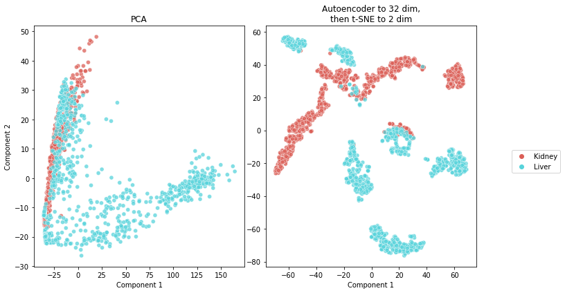
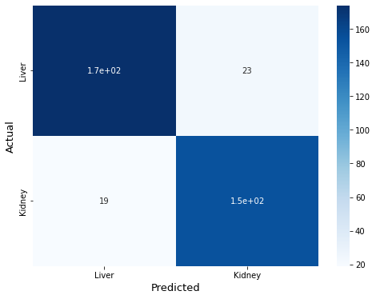
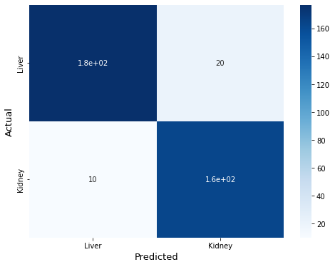
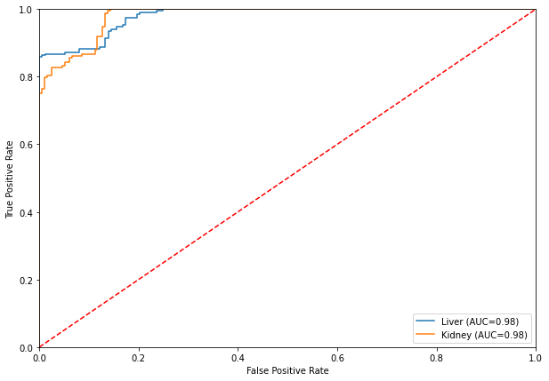
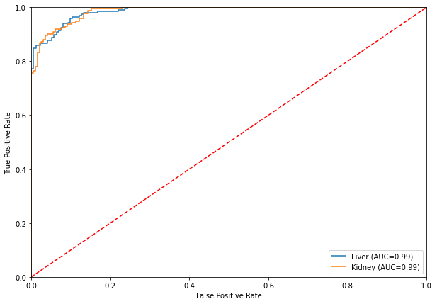

Final Project STAT 259: Single Cell Sequencing Analysis
Contents
Final Project STAT 259: Single Cell Sequencing Analysis¶
import pandas as pd
import numpy as np
import matplotlib.pyplot as plt
import seaborn as sns
import sklearn.metrics as metrics
from sklearn.model_selection import train_test_split
from sklearn.model_selection import StratifiedKFold
from sklearn.decomposition import PCA
from sklearn.manifold import TSNE
from sklearn.preprocessing import StandardScaler
import keras
from keras import layers
from keras import regularizers
from keras.callbacks import EarlyStopping, ModelCheckpoint, ReduceLROnPlateau
from keras.models import save_model, load_model
2022-05-08 02:05:38.077610: W tensorflow/stream_executor/platform/default/dso_loader.cc:64] Could not load dynamic library 'libcudart.so.11.0'; dlerror: libcudart.so.11.0: cannot open shared object file: No such file or directory; LD_LIBRARY_PATH: :
2022-05-08 02:05:38.077662: I tensorflow/stream_executor/cuda/cudart_stub.cc:29] Ignore above cudart dlerror if you do not have a GPU set up on your machine.
Read data¶
def setup_data(name):
"""
...
"""
file = f"data/{name}-counts.csv"
counts = pd.read_csv(file)
counts.rename(columns={'Unnamed: 0':'index'}, inplace=True)
counts.set_index("index", inplace=True)
counts = counts.T
counts.insert(0, 'cell_label', name)
return counts
organs = [
"Kidney",
"Liver",
]
assert len(organs) == 2
Feature filter¶
data = pd.DataFrame()
for organ in organs:
data = data.append(setup_data(organ))
data.shape
(1846, 23434)
# Remove gene counts with zero variance
std = data.std(axis=0, numeric_only=True)
final_features = list(std[std != 0].index)
data = data[final_features + ["cell_label"]]
data.shape
(1846, 18471)
std = std[final_features]
mu = data.groupby(data["cell_label"]).mean().T
score = np.abs((mu[organs[0]] - mu[organs[1]])/std).sort_values(ascending=False)
score.head(20)
index
Sepp1 0.781411
Bhmt 0.750014
Psen2 0.731537
Gnmt 0.722756
Cd302 0.717035
Cdo1 0.709682
Hpd 0.700787
Fgl1 0.699458
Arg1 0.693576
Serpina1b 0.692899
Tat 0.687784
Serpina1a 0.685803
Otc 0.683865
Adh1 0.679625
Fgb 0.674998
Crp 0.672600
Hmgcs2 0.671819
Apoh 0.670908
Fgg 0.670600
Apoc3 0.669172
dtype: float64
# Choose subset of gene counts
num_genes = 1000
selected_features = list(score.iloc[:num_genes].index)
data = data[selected_features + ["cell_label"]]
data.shape
(1846, 1001)
Feature preprocessing¶
data.iloc[:, :-1] = np.log(data.iloc[:,:-1] + 1)
filepath = "processed_data/data.csv"
data.to_csv(filepath, index=True)
Lower-dimension representation of the cells¶
data = pd.read_csv(filepath, index_col=0)
data
| Sepp1 | Bhmt | Psen2 | Gnmt | Cd302 | Cdo1 | Hpd | Fgl1 | Arg1 | Serpina1b | ... | Nop10 | Alkbh5 | Dhdh | Defb1 | Aldob | Tgds | Cml1 | Mrps24 | Atf3 | cell_label | |
|---|---|---|---|---|---|---|---|---|---|---|---|---|---|---|---|---|---|---|---|---|---|
| A14.MAA000545.3_8_M.1.1 | 5.105945 | 0.000000 | 0.000000 | 0.000000 | 0.000000 | 0.000000 | 0.000000 | 0.000000 | 0.000000 | 0.000000 | ... | 0.000000 | 1.098612 | 0.000000 | 4.356709 | 0.000000 | 0.000000 | 0.000000 | 0.000000 | 0.000000 | Kidney |
| E1.MAA000545.3_8_M.1.1 | 5.700444 | 0.000000 | 0.000000 | 0.000000 | 0.000000 | 0.000000 | 0.000000 | 0.000000 | 0.000000 | 0.000000 | ... | 0.000000 | 0.000000 | 4.875197 | 0.000000 | 7.108244 | 0.000000 | 0.000000 | 0.000000 | 0.693147 | Kidney |
| M4.MAA000545.3_8_M.1.1 | 2.639057 | 0.000000 | 0.000000 | 0.000000 | 0.000000 | 4.744932 | 0.000000 | 0.000000 | 0.000000 | 0.000000 | ... | 0.000000 | 0.000000 | 0.000000 | 6.082219 | 0.000000 | 0.000000 | 0.000000 | 0.000000 | 0.000000 | Kidney |
| O21.MAA000545.3_8_M.1.1 | 0.000000 | 0.000000 | 0.000000 | 0.000000 | 0.000000 | 0.000000 | 0.000000 | 0.000000 | 0.000000 | 0.000000 | ... | 2.890372 | 0.000000 | 0.000000 | 3.526361 | 0.000000 | 0.000000 | 0.000000 | 0.000000 | 3.637586 | Kidney |
| P4.MAA000545.3_8_M.1.1 | 6.175867 | 0.000000 | 0.000000 | 5.638355 | 2.639057 | 0.000000 | 0.000000 | 0.000000 | 0.000000 | 0.000000 | ... | 0.000000 | 0.000000 | 0.000000 | 0.000000 | 8.063063 | 0.000000 | 0.000000 | 3.828641 | 0.000000 | Kidney |
| ... | ... | ... | ... | ... | ... | ... | ... | ... | ... | ... | ... | ... | ... | ... | ... | ... | ... | ... | ... | ... | ... |
| C7.MAA100042.3_9_M.1.1 | 8.939712 | 7.624131 | 6.390241 | 8.744488 | 6.111467 | 6.177944 | 6.447306 | 4.836282 | 7.880426 | 9.179572 | ... | 6.016157 | 3.135494 | 0.000000 | 0.000000 | 9.200795 | 4.110874 | 7.949797 | 5.572154 | 5.648974 | Liver |
| A9.MAA100042.3_9_M.1.1 | 8.275631 | 7.848153 | 5.159055 | 8.014997 | 5.968708 | 4.454347 | 7.652071 | 3.496508 | 7.091742 | 8.744488 | ... | 4.905275 | 3.332205 | 5.433722 | 0.000000 | 7.918629 | 0.693147 | 4.406719 | 5.978886 | 0.000000 | Liver |
| C9.MAA100042.3_9_M.1.1 | 7.838738 | 7.412764 | 5.298317 | 7.422971 | 5.648974 | 6.700731 | 7.513164 | 5.117994 | 5.762051 | 7.859413 | ... | 4.553877 | 1.945910 | 2.995732 | 0.000000 | 7.664347 | 3.828641 | 5.241747 | 4.905275 | 1.609438 | Liver |
| A10.MAA100042.3_9_M.1.1 | 0.000000 | 0.000000 | 0.693147 | 0.000000 | 0.000000 | 1.098612 | 0.000000 | 0.693147 | 0.693147 | 1.791759 | ... | 0.693147 | 0.000000 | 0.000000 | 0.000000 | 1.945910 | 0.000000 | 0.000000 | 0.000000 | 0.000000 | Liver |
| C10.MAA100042.3_9_M.1.1 | 0.693147 | 0.000000 | 0.000000 | 0.000000 | 0.000000 | 0.000000 | 0.000000 | 0.693147 | 0.000000 | 0.000000 | ... | 0.000000 | 0.000000 | 0.000000 | 0.000000 | 0.000000 | 0.000000 | 0.000000 | 0.000000 | 0.000000 | Liver |
1846 rows × 1001 columns
x = data.iloc[:, :-1]
y = data.iloc[:, -1]
# One hot encoding of y labels
# Order chosen by proportions in sample and kept in y_labels
y_hot = pd.get_dummies(y)
y_labels = y_hot.mean(axis=0).sort_values(ascending=False).index
y_hot = y_hot[y_labels]
y_hot.head()
| Liver | Kidney | |
|---|---|---|
| A14.MAA000545.3_8_M.1.1 | 0 | 1 |
| E1.MAA000545.3_8_M.1.1 | 0 | 1 |
| M4.MAA000545.3_8_M.1.1 | 0 | 1 |
| O21.MAA000545.3_8_M.1.1 | 0 | 1 |
| P4.MAA000545.3_8_M.1.1 | 0 | 1 |
# 80:20 split shuffling data
x_train, x_test, y_train, y_test = train_test_split(x, y_hot, test_size=0.2, random_state=42, shuffle=True, stratify=y)
# Shape validation for x
x.shape, x_train.shape, x_test.shape
((1846, 1000), (1476, 1000), (370, 1000))
# Shape validation for y
y.shape, y_train.shape, y_test.shape
((1846,), (1476, 2), (370, 2))
Autoencoder¶
# Latent space of 32 dimensions
# 1 hidden layer for encoder and one for decoder
# L1 regularization used in fully connected layers
# Encoder will be defined later after training
encoding_dim = 32
input_dim = x.shape[1]
input_obj = keras.Input(shape=(input_dim,))
dropout1 = layers.Dropout(.2)(input_obj)
hidden1 = layers.Dense(128, activation='relu',
activity_regularizer=regularizers.l1(10e-5))(dropout1)
dropout2 = layers.Dropout(.2)(hidden1)
encoded = layers.Dense(encoding_dim, activation='relu',
activity_regularizer=regularizers.l1(10e-5))(dropout2)
dropout3 = layers.Dropout(.2)(encoded)
hidden2 = layers.Dense(128, activation='relu')(dropout3)
dropout4 = layers.Dropout(.2)(hidden2)
decoded = layers.Dense(input_dim, activation='sigmoid')(dropout4)
autoencoder = keras.Model(input_obj, decoded)
autoencoder.summary()
Model: "model"
_________________________________________________________________
Layer (type) Output Shape Param #
=================================================================
input_1 (InputLayer) [(None, 1000)] 0
_________________________________________________________________
dropout (Dropout) (None, 1000) 0
_________________________________________________________________
dense (Dense) (None, 128) 128128
_________________________________________________________________
dropout_1 (Dropout) (None, 128) 0
_________________________________________________________________
dense_1 (Dense) (None, 32) 4128
_________________________________________________________________
dropout_2 (Dropout) (None, 32) 0
_________________________________________________________________
dense_2 (Dense) (None, 128) 4224
_________________________________________________________________
dropout_3 (Dropout) (None, 128) 0
_________________________________________________________________
dense_3 (Dense) (None, 1000) 129000
=================================================================
Total params: 265,480
Trainable params: 265,480
Non-trainable params: 0
_________________________________________________________________
2022-05-08 02:05:52.513597: W tensorflow/stream_executor/platform/default/dso_loader.cc:64] Could not load dynamic library 'libcuda.so.1'; dlerror: libcuda.so.1: cannot open shared object file: No such file or directory; LD_LIBRARY_PATH: :
2022-05-08 02:05:52.513692: W tensorflow/stream_executor/cuda/cuda_driver.cc:326] failed call to cuInit: UNKNOWN ERROR (303)
2022-05-08 02:05:52.513760: I tensorflow/stream_executor/cuda/cuda_diagnostics.cc:156] kernel driver does not appear to be running on this host (jupyter-wtsai869): /proc/driver/nvidia/version does not exist
2022-05-08 02:05:52.514063: I tensorflow/core/platform/cpu_feature_guard.cc:142] This TensorFlow binary is optimized with oneAPI Deep Neural Network Library (oneDNN) to use the following CPU instructions in performance-critical operations: AVX2 FMA
To enable them in other operations, rebuild TensorFlow with the appropriate compiler flags.
# Configurations for improving training with the aim to reduce over-fitting
# and also allow to seek for a lower bias model.
# Reference: https://stackoverflow.com/questions/48285129/saving-best-model-in-keras
earlyStopping = EarlyStopping(monitor='val_loss', patience=20, verbose=0, mode='min')
mcp_save = ModelCheckpoint('models/autoencoder_best.hdf5', save_best_only=True, monitor='val_loss', mode='min')
reduce_lr_loss = ReduceLROnPlateau(monitor='val_loss', factor=0.5, patience=10, verbose=0, min_delta=1e-4, mode='min')
# Used MSE as loss
autoencoder.compile(optimizer='adam', loss='mean_squared_error')
autoencoder.fit(
x_train, x_train,
epochs=500,
batch_size=256,
shuffle=True,
validation_data=(x_test, x_test),
callbacks=[earlyStopping, mcp_save, reduce_lr_loss],
verbose=0,
)
2022-05-08 02:05:52.899201: I tensorflow/compiler/mlir/mlir_graph_optimization_pass.cc:176] None of the MLIR Optimization Passes are enabled (registered 2)
2022-05-08 02:05:52.899904: I tensorflow/core/platform/profile_utils/cpu_utils.cc:114] CPU Frequency: 2299995000 Hz
<keras.callbacks.History at 0x7fa5b34ac3d0>
# Load best
autoencoder = load_model('models/autoencoder_best.hdf5', compile=False)
autoencoder.compile(optimizer='adam', loss='mean_squared_error')
# Evaluate autoencoder performance
autoencoder.evaluate(x_test, x_test)
12/12 [==============================] - 0s 2ms/step - loss: 4.9985
4.730914115905762
# Encoder
encoder_output = autoencoder.layers[4].output
encoder_input = autoencoder.input
encoder = keras.Model(encoder_input, encoder_output)
encoder.summary()
Model: "model_1"
_________________________________________________________________
Layer (type) Output Shape Param #
=================================================================
input_1 (InputLayer) [(None, 1000)] 0
_________________________________________________________________
dropout (Dropout) (None, 1000) 0
_________________________________________________________________
dense (Dense) (None, 128) 128128
_________________________________________________________________
dropout_1 (Dropout) (None, 128) 0
_________________________________________________________________
dense_1 (Dense) (None, 32) 4128
=================================================================
Total params: 132,256
Trainable params: 132,256
Non-trainable params: 0
_________________________________________________________________
# Save model
encoder.compile(optimizer='adam', loss='mean_squared_error')
save_model(encoder, 'models/encoder_best.hdf5', save_format='hdf5')
# PCA
pca32 = PCA(n_components=32)
x_pca = pca32.fit_transform(x)
# t-SNE
tsne2 = TSNE(n_components=2, learning_rate=200, init='random', method='exact')
x_tsne2 = tsne2.fit_transform(x_pca)
# Encoder used to get input data's latent variables
x_encoded = encoder.predict(x)
x_encoded.shape
(1846, 32)
# Encoder to 32 dim, then t-SNE to 2 dim
x_encoded_tsne2 = tsne2.fit_transform(x_encoded)
# Plot 2D representations
ncols = 2
fig, ax = plt.subplots(1, ncols, figsize=(12, 6))
x_dict = {
'PCA': x_pca[:, :2],
#'t-SNE': x_tsne2,
'Autoencoder to 32 dim,\nthen t-SNE to 2 dim': x_encoded_tsne2,
}
n = len(x_dict)
for i, (title, x_plot) in enumerate(x_dict.items()):
col = i
ax_i = ax[col]
sns.scatterplot(
x=x_plot[:,0], y=x_plot[:,1],
hue=y,
palette=sns.color_palette("hls", 2),
legend="full",
alpha=0.75,
ax=ax_i)
if i == n - 1:
handles, labels = ax_i.get_legend_handles_labels()
ax_i.get_legend().remove()
ax_i.set_title(title)
ax_i.set_xlabel('Component 1')
if col == 0:
ax_i.set_ylabel('Component 2')
fig.legend(handles, labels, bbox_to_anchor=(0.9, 0.4), loc='lower center', ncol=1)
fig.tight_layout()
fig.subplots_adjust(right=0.8)
plt.savefig('figures/projection.jpg', format='jpg')
plt.show()

Classifier¶
Cross Validation¶
def initilize_supervised_model(size):
"""
- Loads trained encoder
- Adds layers according to size given (size in ['small', 'larger'])
for supervized learning set up (label prediction)
- Returns supervised model with untrained added layers
but first layers, coming from encoder, are trained already
"""
assert size in ['small', 'larger']
# Load encoder
encoder_load = load_model('models/encoder_best.hdf5', compile=False)
# Add layers
encoder_output = encoder_load.layers[-1].output
encoder_input = encoder_load.input
if size == 'small':
# Small model
dropout = layers.Dropout(.2)(encoder_output)
output = layers.Dense(2, activation='softmax')(dropout)
nn_model = keras.Model(encoder_input, output)
elif size == 'larger':
# Larger model
dropout_output1 = layers.Dropout(.2)(encoder_output)
dense_output1 = layers.Dense(16, activation='relu')(dropout_output1)
dropout_output2 = layers.Dropout(.2)(dense_output1)
output = layers.Dense(2, activation='softmax')(dropout_output2)
nn_model = keras.Model(encoder_input, output)
# Fix encoder parameters to avoid overfitting
idx_not_train = [1, 2, 3, 4]
for i in idx_not_train:
nn_model.layers[i].trainable = False
nn_model.compile(optimizer='adam', loss='categorical_crossentropy')
return nn_model
# Small model quick validation
nn_small = initilize_supervised_model('small')
nn_small.summary()
Model: "model_2"
_________________________________________________________________
Layer (type) Output Shape Param #
=================================================================
input_1 (InputLayer) [(None, 1000)] 0
_________________________________________________________________
dropout (Dropout) (None, 1000) 0
_________________________________________________________________
dense (Dense) (None, 128) 128128
_________________________________________________________________
dropout_1 (Dropout) (None, 128) 0
_________________________________________________________________
dense_1 (Dense) (None, 32) 4128
_________________________________________________________________
dropout_4 (Dropout) (None, 32) 0
_________________________________________________________________
dense_4 (Dense) (None, 2) 66
=================================================================
Total params: 132,322
Trainable params: 66
Non-trainable params: 132,256
_________________________________________________________________
# Larger model quick validation
nn_larger = initilize_supervised_model('larger')
nn_larger.summary()
Model: "model_3"
_________________________________________________________________
Layer (type) Output Shape Param #
=================================================================
input_1 (InputLayer) [(None, 1000)] 0
_________________________________________________________________
dropout (Dropout) (None, 1000) 0
_________________________________________________________________
dense (Dense) (None, 128) 128128
_________________________________________________________________
dropout_1 (Dropout) (None, 128) 0
_________________________________________________________________
dense_1 (Dense) (None, 32) 4128
_________________________________________________________________
dropout_5 (Dropout) (None, 32) 0
_________________________________________________________________
dense_5 (Dense) (None, 16) 528
_________________________________________________________________
dropout_6 (Dropout) (None, 16) 0
_________________________________________________________________
dense_6 (Dense) (None, 2) 34
=================================================================
Total params: 132,818
Trainable params: 562
Non-trainable params: 132,256
_________________________________________________________________
# Call backs
# Early stopping
earlyStopping = EarlyStopping(
monitor='val_loss',
patience=20,
verbose=0,
mode='min'
)
# Reduce learning rate on plateu
reduce_lr_loss = ReduceLROnPlateau(
monitor='val_loss',
factor=0.5,
patience=10,
min_delta=1e-4,
mode='min',
verbose=0,
)
# Save best model by validation loss
def mcp_save(size):
return ModelCheckpoint(
f"models/nn_{size}_best.hdf5",
save_best_only=True,
monitor='val_loss',
mode='min',
)
def compute_metrics(y_true, y_score, average='macro'):
assert y_true.shape == y_score.shape
y_ind_pred = np.argmax(y_score, axis=1)
y_ind_true = np.argmax(y_true, axis=1)
accuracy = metrics.accuracy_score(y_ind_true, y_ind_pred)
precision = metrics.precision_score(y_ind_true, y_ind_pred, average=average)
recall = metrics.recall_score(y_ind_true, y_ind_pred, average=average)
f1 = metrics.f1_score(y_ind_true, y_ind_pred, average=average)
roc_auc = metrics.roc_auc_score(y_true, y_score, average=average)
return {
"accuracy": accuracy,
"precision": precision,
"recall": recall,
"f1": f1,
"roc_auc": roc_auc,
}
# Cross validation
def nn_cross_validation(size, x, y, n_split=3):
print(f"Cross-validation for size = {size}")
# Stratified k-fold is used
kfold = StratifiedKFold(n_split, shuffle=True, random_state=0)
# Reset index
xx = x.copy().reset_index(drop=True)
yy = y.copy().reset_index(drop=True)
yy_ind = np.argmax(yy.values, axis=1)
rows = []
for i, (train_index, test_index) in enumerate(kfold.split(xx, yy_ind)):
# Split
xx_train, xx_test = xx.loc[train_index], xx.loc[test_index]
yy_train, yy_test = yy.loc[train_index], yy.loc[test_index]
# Train and save model
nn_model = initilize_supervised_model(size)
nn_model.fit(
xx_train, yy_train,
epochs=500,
batch_size=256,
shuffle=True,
validation_data=(xx_test, yy_test),
callbacks=[earlyStopping, mcp_save(size), reduce_lr_loss],
verbose=0,
)
# Load best model
nn_model = load_model(f"models/nn_{size}_best.hdf5", compile=False)
nn_model.compile(optimizer='adam', loss='categorical_crossentropy')
# Assess performance
loss = nn_model.evaluate(xx_test, yy_test, verbose=0)
y_true = yy_test.values
y_score = nn_model.predict(xx_test)
row_dict = compute_metrics(y_true, y_score)
row_dict['categorical_crossentropy'] = loss
rows.append(row_dict)
# Collect performance results
results = pd.DataFrame.from_dict(rows, orient='columns')
results = results.reset_index().rename(columns={'index': 'fold'})
return results
# Cross-validation results for small model: folds details
res_cv_small = nn_cross_validation("small", x_train, y_train)
res_cv_small
Cross-validation for size = small
| fold | accuracy | precision | recall | f1 | roc_auc | categorical_crossentropy | |
|---|---|---|---|---|---|---|---|
| 0 | 0 | 0.918699 | 0.919907 | 0.921133 | 0.918678 | 0.987063 | 0.164703 |
| 1 | 1 | 0.910569 | 0.910002 | 0.910982 | 0.910356 | 0.981888 | 0.187130 |
| 2 | 2 | 0.902439 | 0.902017 | 0.903618 | 0.902278 | 0.981679 | 0.178975 |
# Cross-validation results for larger model: folds details
res_cv_larger = nn_cross_validation("larger", x_train, y_train)
res_cv_larger
Cross-validation for size = larger
| fold | accuracy | precision | recall | f1 | roc_auc | categorical_crossentropy | |
|---|---|---|---|---|---|---|---|
| 0 | 0 | 0.928862 | 0.930813 | 0.931706 | 0.928854 | 0.983099 | 0.169535 |
| 1 | 1 | 0.949187 | 0.951003 | 0.947629 | 0.948832 | 0.988987 | 0.175703 |
| 2 | 2 | 0.922764 | 0.922764 | 0.924560 | 0.922682 | 0.987620 | 0.166137 |
# Cross-validation aggregated results for both models
res_cv = pd.concat((res_cv_small.iloc[:,1:].mean(axis=0), res_cv_larger.iloc[:,1:].mean(axis=0)), axis=1).T.round(3)
res_cv.index = ['small', 'larger']
res_cv
| accuracy | precision | recall | f1 | roc_auc | categorical_crossentropy | |
|---|---|---|---|---|---|---|
| small | 0.911 | 0.911 | 0.912 | 0.910 | 0.984 | 0.177 |
| larger | 0.934 | 0.935 | 0.935 | 0.933 | 0.987 | 0.170 |
Test Performance¶
def plot_roc_curve(name, y_true, y_score, indices, filename=None, extension=None):
plt.figure(figsize=(10, 7))
# Compute and plot fpr and tpr per selected labels/indices
for ind in indices:
y_score_ind = y_score[:, ind]
y_true_ind = y_true == ind
fpr, tpr, threshold = metrics.roc_curve(y_true_ind, y_score_ind)
roc_auc = metrics.auc(fpr, tpr)
plt.plot(fpr, tpr, label = f"{y_labels[ind]} (AUC={roc_auc:.2f})")
if name:
plt.title(f'Receiver Operating Characteristic {name}')
plt.legend(loc='lower right')
plt.plot([0, 1], [0, 1], 'r--')
plt.xlim([0, 1])
plt.ylim([0, 1])
plt.ylabel('True Positive Rate')
plt.xlabel('False Positive Rate')
if filename:
plt.savefig(f'figures/{filename}.{extension}', format=extension)
plt.show()
# Load last model trained in cross-validation
# Training needs a validation set so any fold model is OK
nn_small = load_model(f"models/nn_small_best.hdf5", compile=False)
nn_larger = load_model(f"models/nn_larger_best.hdf5", compile=False)
nn_small.compile(optimizer='adam', loss='categorical_crossentropy')
nn_larger.compile(optimizer='adam', loss='categorical_crossentropy')
# Truth and predictions
y_true = y_test.values
y_true_ind = np.argmax(y_true, axis=1)
y_score_small = nn_small.predict(x_test)
y_score_larger = nn_larger.predict(x_test)
# Confusion matrix
conf_matrix_small = metrics.confusion_matrix(y_true_ind, np.argmax(y_score_small, axis=1))
conf_matrix_larger = metrics.confusion_matrix(y_true_ind, np.argmax(y_score_larger, axis=1))
def plot_confusion_matrix(name, conf_matrix, filename=None, extension=None):
plt.figure(figsize=(8, 6))
sns.heatmap(conf_matrix, cmap='Blues', annot=True, yticklabels=y_labels, xticklabels=y_labels)
if name:
plt.title(f"Confusion Matrix {name}")
plt.xlabel("Predicted", fontsize=13)
plt.ylabel("Actual", fontsize=13)
if filename:
plt.savefig(f'figures/{filename}.{extension}', format=extension)
plt.show()
# Confusion matrix small model
plot_confusion_matrix(None,
conf_matrix_small,
'confusion_matrix_small',
'jpg')

# Confusion matrix larger model
plot_confusion_matrix(None,
conf_matrix_larger,
'confusion_matrix_larger',
'jpg')

# Performance on test set
metrics_small = compute_metrics(y_true, y_score_small)
metrics_larger = compute_metrics(y_true, y_score_larger)
res = pd.DataFrame.from_dict([metrics_small, metrics_larger],
orient='columns').round(3)
res.index = ['small', 'larger']
res
| accuracy | precision | recall | f1 | roc_auc | |
|---|---|---|---|---|---|
| small | 0.886 | 0.886 | 0.887 | 0.886 | 0.980 |
| larger | 0.919 | 0.919 | 0.920 | 0.919 | 0.986 |
# Plot ROC curve
prop_min=0.05
label_prop = y_hot.mean(axis=0).reindex(labels)
indices = [ind for ind in range(len(labels)) if label_prop.iloc[ind] >= prop_min]
display(label_prop)
print(f"Indices to plot: {indices}")
Kidney 0.468581
Liver 0.531419
dtype: float64
Indices to plot: [0, 1]
# ROC curve small model
plot_roc_curve(
None,
y_true_ind,
y_score_small,
indices,
"roc_small",
"jpg"
)

# ROC curve larger model
plot_roc_curve(
None,
y_true_ind,
y_score_larger,
indices,
"roc_larger",
"jpg"
)
